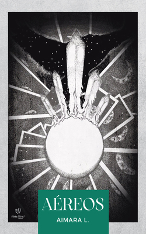

Títulos de la autora

Durante siglos, el mundo mágico permaneció en conflicto, con excepción de un lugar donde ninguna tradición ha cambiado, conocido por todos bajo el nombre de Oeste. Los problemas arribarán con la introducción de un elemento novedoso en el mercado, cuyos ecos viajarán a través del tiempo hasta aquellos con el valor necesario para luchar por erradicarlo. Así, viejas y nuevas sabidurías se combinarán contra el avance del condimento supremo, un componente en apariencia inofensivo, pero capaz de erradicar la magia para siempre. Misterios, acertijos e intrigas, entretejerán una trama con innumerables resultados posibles para los ojos de quienes realmente puedan mirarlos.
Link de descarga del primer capitulo Editorial